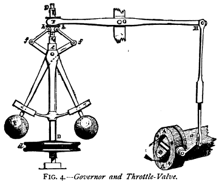

As anybody who has properly internalised their Economy 101 and Evolutionary Biology 101 classes I have a strong inclination towards libertarian philosophy. I have almost Hayekian distrust for central planning (incidentally, I grew up in Ostblok) and almost Dawkinsian fascination with autonomously evolving systems.
However, every time I become too enthusiastic about all that I remind myself of centrifugal governor and calm down a little.
Centrifugal governor is a device, first added to the steam engine by James Watt himself. It controls flow of steam to the valves and thus allows the machine to maintain constant speed. It's powered by the machine and as the machine goes faster it makes the spindle rotate faster, thus lifting the attached masses which in turn connect to the throttle valve which then limits amount of steam admitted to the valves. In short, it's a self-regulating system.

And while, like all good libertarians, I would hate travelling by a train with centrifugal governor disabled or missing, I would also hate to travel by one where the crew believed that centrifugal governor is a god-sent solution for all problems and refused to steer the train.
In other words, self-regulating mechanisms, as great as they are, aren't omnipotent and work only when some basic assumptions are met. In case of centrifugal governor we want to be sure that the centrifuge is not stuck, that it's not made of plastic that would melt in contact with hot steam or be ripped apart by centrifugal force and so on. In case of markets we want the good to be a commodity (no efficient market for Rembrandt's Night Watch!), to be scarce (no efficient market for information goods either, sorry), demand and supply to be elastic and so on.
In yet another words, the fact that efficient markets self-regulate doesn't absolve us of the responsibility to keep eye or real-world markets and to make sure that they are truly efficient.
Saying that the cure is worse than the disease and that regulating markets is necessarily going to make them perform worse is like saying that checking and fixing the centrifugal governor is necessarily going to mess with it and make it more likely to fail.
We have solved the problem with the centrifugal governor: We may require the mechanic who handles it to have proper education, we may want to re-test them periodically to ensure that they haven't forgotten everything. We may want them to cross-check each other's work. We may promote an incentive system where less capable mechanics are pushed away from the most critical work and are replaced by more capable ones.
We may as well solve the inefficient market problem. Technically, it's only a question of adding more levels of (ideally self-regulating) control on the top of the basic mechanism. Ultimately though, it requires responsible human beings watching the whole system, raising questions about it and being able to implement fixes when things go wrong.
October 25th, 2015